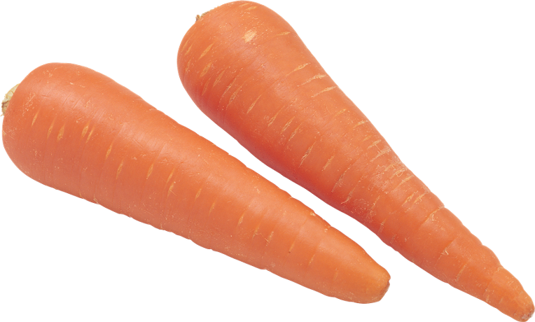

ABC Juice

Apple, Beet, Carrot 갈아서 만든 쥬스
B
Apple
C

사과 속에는 식이섬유인 ‘펙틴’이 풍부하게 들어있다. 펙틴은 장을 약산성으로 유지하며 나쁜 균의 증식을 억제하는 데 도움을 준다. 사과에 들어 있는 유기산은 몸 안에 쌓인 피로 물질을 제거해준다.
A
Beet
C

항산화 성분인 베타시아닌은 발암성 물질의 생성을 억제한다. 베타인 성분은 혈관에 혈전이 쌓이는 것을 방지해준다. 단, 비트는 많이 먹으면 옥살산 성분 때문에 신장에 결석이 생길 수 있으니 하루에 최대 한 개만 먹는 것이 좋다.
A
Beet
C

당근에는 베타카로틴이 풍부하다. 베타카로틴이 몸 안으로 들어가면 비타민 A로 변환되어 시력을 보호하고 야맹증을 예방해준다. 활성산소의 체내 세포 손상을 방지하고 면역력을 키워주는 효과가 있다.